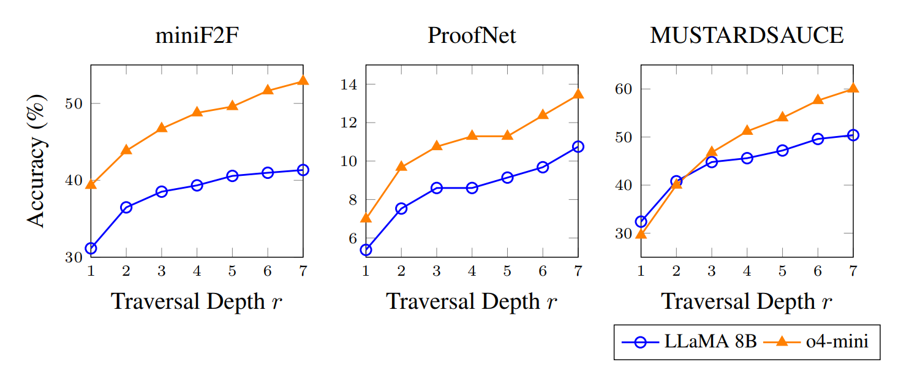

Large language models have demonstrated remarkable capabilities in natural language processing tasks requiring multi-step logical reasoning capabilities, such as automated theorem proving. However, challenges persist within theorem proving, such as the identification of key mathematical concepts, understanding their interrelationships, and formalizing proofs correctly within natural language. We present KG-prover, a novel framework that leverages knowledge graphs mined from reputable mathematical texts to augment general-purpose LLMs to construct and formalize mathematical proofs -- reasoning through the problem completely in natural language before outputting into a formal proof. We also study the effects of scaling graph-based, test-time compute using KG-Prover, demonstrating significant performance improvements over baselines across multiple datasets. General-purpose models improve up to 21% on minif2f when combined with KG-Prover, with consistent improvements ranging from 2–11% on the ProofNet, miniF2F-test, and MUSTARD datasets. This work provides a promising approach augmenting natural language proof reasoning with knowledge graphs without the need for additional finetuning.
Using the KG-Prover improves performance across all benchmarks over the baselines and Retrieval Augmented Generation.
Using Knowledge Graphs with expert models like TheoremLlama and evaluating with pass@3 can yield performance comparable to running 128 rounds of generation without a Knowledge Graph.
| Dataset | Claude 3.5 | Deepseek R1 | Llama 3.1 8B | Llama 3.3 70B | GPT-4o | o1-mini |
|---|---|---|---|---|---|---|
| ProofNet | 4.84% | 5.38% | 4.30% | 4.30% | 6.45% | 6.99% |
| miniF2F | 31.15% | 28.28% | 31.97% | 30.74% | 30.74% | 30.74% |
| MUSTARD | 30.00% | 27.00% | 27.60% | 32.50% | 30.00% | 34.00% |
As visualized, using graphs consistently outperforms baseline proof systems and over Retrieval Augmented Generation. Performance gains of the KG-Prover ranged from 2-11\% across different models
Scaling knowledge graphs for formal reasoning proves to be an effective strategy when combined with self-consistency, iterative refinement and deep graph traversal.
Scaling KG-Prover depth significantly boosts performance across all benchmarks, with the most notable gains in the first three scaling steps.
o4-mini reaches an accuracy on miniF2F of over 52% and 60% on mustardsauce without ANY additional training.
Using the KG-Prover is as easy as running the knowledge graph creation script, plugging in the models and starting the evaluation. We encourage you to use our knowledge graph and build your own with minimum overhead, based of our GitHub repository.
A number of recent works have made significant advances in learning-based formal theorem proving.
DeepSeek-Prover-V1.5 combines proof-assistant feedback with Monte Carlo tree search, achieving state-of-the-art results on miniF2F and ProofNet through reward-driven exploration.
LeanDojo’s ReProver uses retrieval-augmented generation to guide LLM-based proof search in Lean, improving both premise selection and sample efficiency.
HyperTree introduces structured AlphaZero-style search to boost proof success in formal systems like Metamath and Lean.
STP casts proving as a self-play game between a conjecturer and prover, enabling open-ended learning through generated training data.
TheoremLlama shows that general-purpose LLMs can be fine-tuned into capable Lean provers using bootstrapped datasets and curriculum learning.
@misc{li2025automatingmathematicalproofgeneration,
title={Automating Mathematical Proof Generation Using Large Language Model Agents and Knowledge Graphs},
author={Vincent Li and Yule Fu and Tim Knappe and Kevin Han and Kevin Zhu},
year={2025},
eprint={2503.11657},
archivePrefix={arXiv},
primaryClass={cs.CL},
url={https://arxiv.org/abs/2503.11657},
}